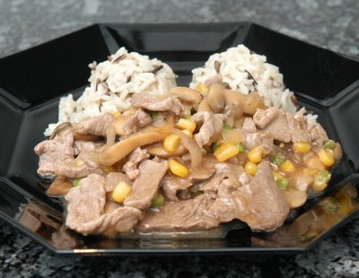

| Zutaten für 4 Personen: | |
| 400 g | Kalbfleisch |
| 3 | Schalotten |
| 2 EL | Butter |
| Salz | |
| Pfeffer | |
| Rosmarinpulver | |
| 3 dl | Weisswein |
| 3 EL | Sojasauce |
| 2 TL | Maispuder |
| 120 g | Champignons |
| 1/4 Dose | Maiskörner |
| 1/4 Dose | grüne Erbsen |
Zubereitungszeit: 20 Minuten
Kalbfleisch in feine Streifen scheiden, Schalotten hacken.
Pfanne mit Butter erhitzen, Kalbfleisch rasch anbraten, herausnehmen und warm stellen. Mit Salz, Pfeffer und Rosmarin würzen.
Schalotten in die Pfanne geben, andünsten. Schalotten und Bratensatz mit Weisswein ablöschen.
Sojasauce mit Maispuder mischen, zum Fond geben und 1 - 2 Minuten aufkochen.
In Scheiben geschnittene Champignons, Maiskörner und Erbsen zur Sauce geben, Sauce abschmecken.
Kalbfleisch zur Sauce geben, kurz erwärmen, aber nicht kochen. Sofort servieren.
Dazu passt Kartoffelstock oder Reis. Man kann für dieses Gericht auch Geflügel- oder Schweinefleisch verwenden.
Herbert Eigenmann, Code: GMG
Pro Person: 334 Kalorien, 1403 Joule
Währschaft. Schmeckt korrekt. RE, 29.2.2000
Am 4.3.2010 gelang mir das Gericht für Reini ganz gut. Es hatte einen unerwartet guten Geschmack. Einfach und schnell zubereitet. Etwas das ich sicher wieder mal machen kann. RE
@LINKBACK_TAG@ @WAKELOCK@